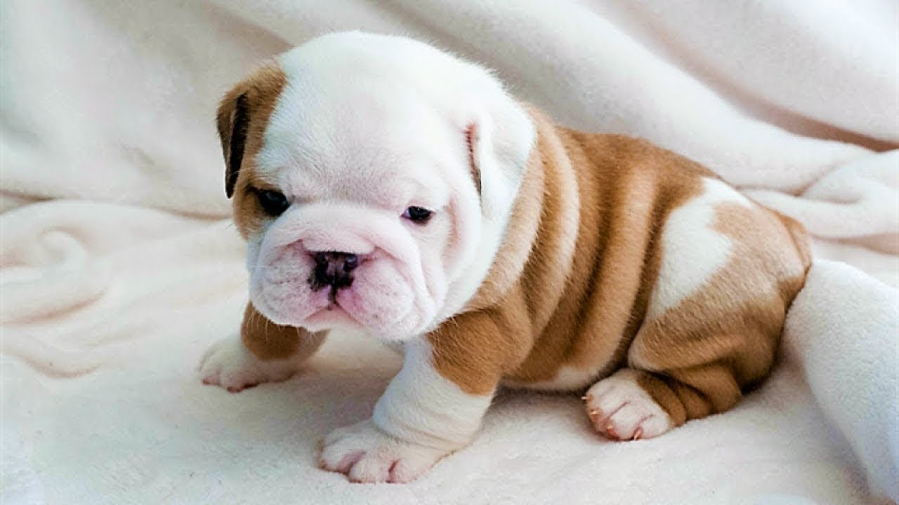

Lucrecia es mi mascota y una gran compañera. Es una perrita de raza Bull Terrier que actualmente tiene 3 años de edad.
Lucrecia es muy activa, le encanta jugar con pelotas y correr en el parque. Tiene una personalidad alegre, es sociable con las personas y otros animales, y siempre está moviendo la cola cuando está feliz.
Un día, Lucrecia se escapó de casa para seguir a una mariposa y terminó metida en una fuente de agua. Estaba empapada, pero muy feliz. ¡Nos hizo reír a todos!
Puedes aprender más sobre los Bull Terrier visitando esta página: Información sobre Bull Terrier
Si deseas buscar más información general, visita Google.